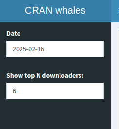
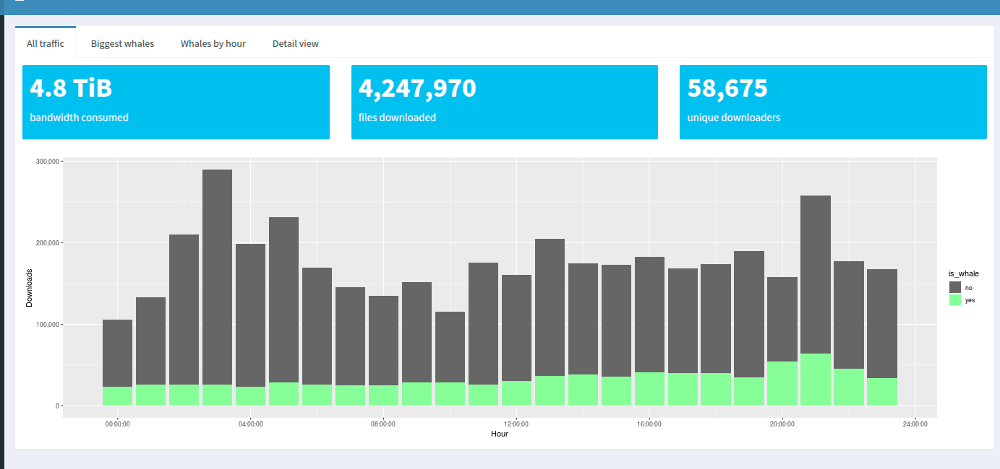
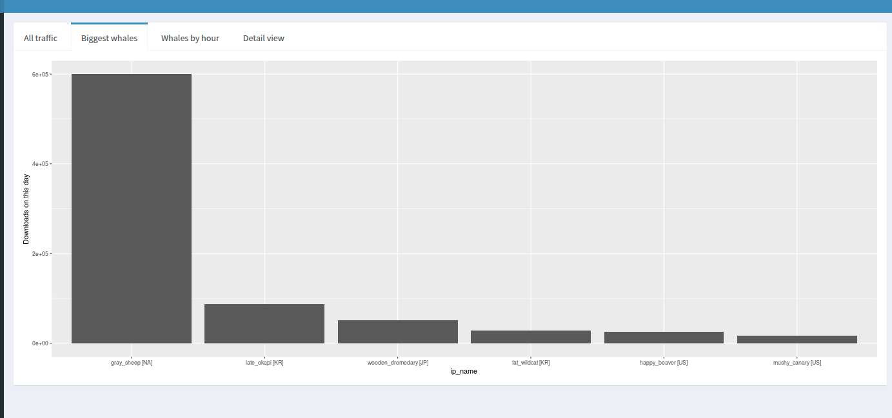
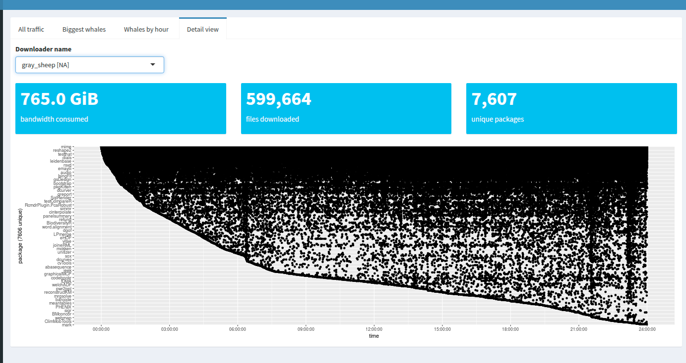
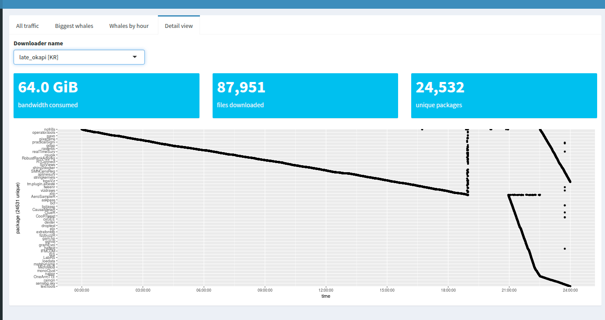
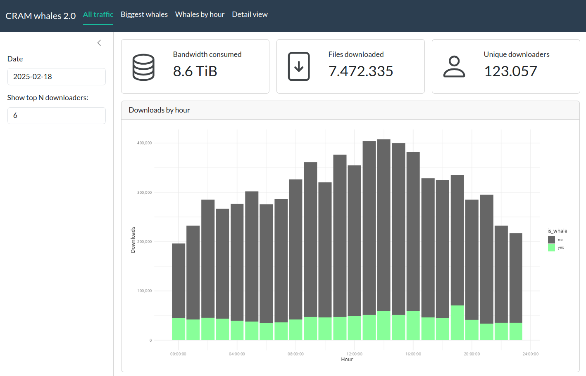
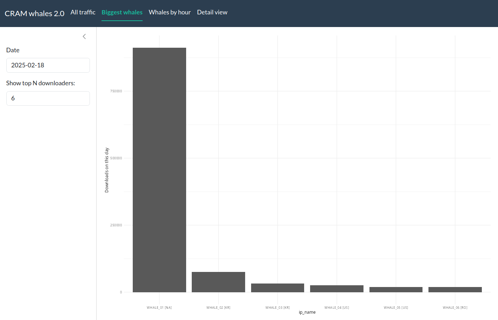
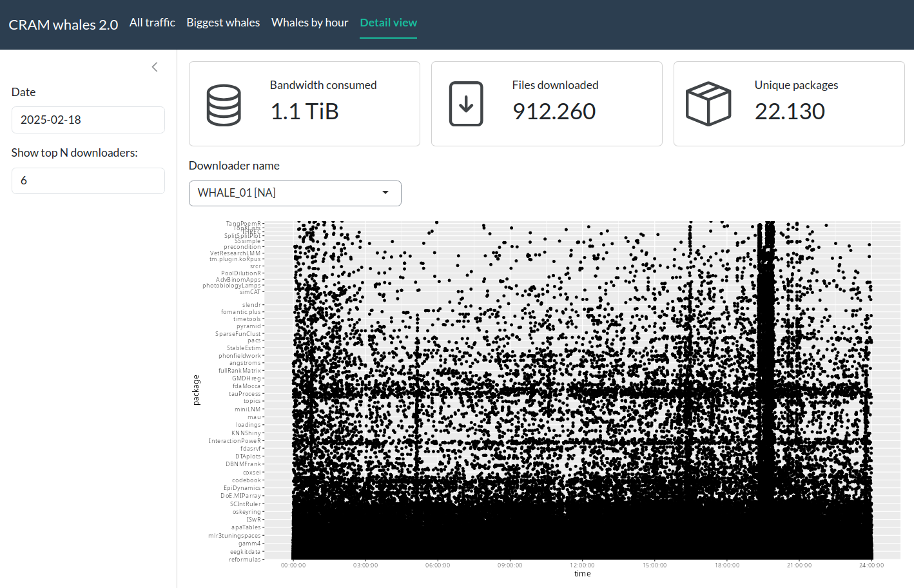

# df = download_and_read()
# glimpse(df, n = 10)The limits of Shiny
A guide to serve a shiny app to the maximum amount of people ever imagined
Intro
Given a fixed amount of hardware serving the shiny app (say, 2 cores) and a fixed amount of hardware serving an optional API backend (say, 4 cores), how many people can access a shiny app and have a good experience? Can we make it to a thousand?
This guide is a modern reading of the classic promises Case study: converting a Shiny app to async mixed with shinyloadtest Case study: Scaling an app.
Starting with an innocent shiny app, we will do many steps to make it more performant and analyze how many people can use it at the same time, creating reports with shinyloadtest and shinycannon. The roadmap is the following:
- App 1: the first version of the cranwhales app1. We will modify some things to make it more modern (for example, use
bslib). - App 2: modify App 1 to introduce cache and memoise; use faster functions where possible.
- App 3: modify App 2 to introduce async via the new ExtendedTask.
- App 4-R: modify App 3 to use an external plumber API.
- App 4-Julia: modify App 3 to use an external API made in Julia with Oxygen.jl. Julia is known for being a high-performance language, so let’s give it a try here.
- App 4-Python: modify App 3 to use an external API made in fastapi?
The repo is structured as a R package to make it easy to track dependencies, load functions and share them between the apps.
A tour by CRAN whales
You can see it online or follow me in this guided tour.
The app intention is to show the whales: certain IPs that download a lot of data from CRAN.
Widgets
The app has two widgets in a sidebar: - a date selector, stored in input$date: the day of the downloads. - a numeric input with the amount of whales (that is: the top N downloaders); stored in input$n_whales. It goes from 1 to 25.
There is no button.

The data
For each selected date, the app should download the zipped file from http://cran-logs.rstudio.com/ and read it.
We will store the downloaded data to be read again for the next user, but will delete all data when the app starts globally (not per-user) mimicking the fresh start of a new server.
Each zipped file has around ~90MB and stores a dataframe with ~7 million rows and 6 columns; it takes ~250MB of RAM after read. Here is a glimpse of the dataset:
Tab 1: All traffic
This tab show three value boxes and a chart with the amount of downloads per hour, colored by whales vs. non-whales. You can see the impact of 6 users compared to the total ~58k users.

We need to calculate the top N whales2 and store it in a variable; then we calculate the amount of downloads per id per hour and colour by whale vs. non-whale.
Tab 2: Biggest whales
Here we compare the amount of downloads between the whales in a single day.

Tab 3: Whales by hour
For each whale in a facet, count the downloads by hour.

Tab 4: Detail view
In the detail view, we can see which package was downloaded in a timeline by selecting a whale.


App 1: modern cranwhales
I’ve made some changes compared to the original 2018 CRAN whales app:
I used the more modern
bslibinstead ofshinydashboard.I created a module for each page and appended the app version to it (for example,
md1.all_traffic_UImeans “module for app 1”). I also prepared all possible data in server before passing these to the modules3. It will be easier to optimize the app later in this setting, and I pass to each module just the essential.I isolated all calculations and plots in separate files (
R/data.RandR/plots), to be reused. More important: inside arenderPlotthere is no calculation; in this way, a typical pipeline israw_data |> prepare_data() |> plot_data().
To run the app, load all dependencies and just run
run_app1()



UI
The UI simply call the modules
ui1 <- function() {
ui <- page_navbar(
title = "CRAM whales 2.0",
theme = my_bs_theme(),
sidebar = sidebar(
dateInput(inputId = "date", label = "Date", value = app_start_date(), max = app_start_date()),
numericInput(inputId = "n_whales", label = "Show top N downloaders:", 6, min = 1, max = 25, step = 1)
),
nav_panel(title = "All traffic", md1.all_traffic_UI()),
nav_panel(title = "Biggest whales", md1.biggest_whales_UI()),
nav_panel(title = "Whales by hour", md1.whales_by_hour_UI()),
nav_panel(title = "Detail view", md1.detail_view_UI())
)
ui
}Server
server1 <- function(input, output, session) {
# rc.data: read data ------------------------------------------------------
rc.data <- reactive({
download_and_read(input$date)
}) |>
bindEvent(input$date)
# Tab 1: All traffic ------------------------------------------------------
# rc.count: simple counting -----------------------------------------------
rc.count <- reactive({
calc_count_downloads(rc.data())
})
# rc.whales: separate the whales ------------------------------------------
rc.whales <- reactive({
create_ip_names(rc.count(), input$n_whales)
}) |>
bindEvent(input$n_whales, rc.count())
rc.whales_vs_non_whales_by_hour <- reactive({
calc_whales_vs_non_whales_by_hour(df = rc.data(), whale_ip = rc.whales()$ip_id)
})
# rc.valueboxes ------------------------------------------------------------
rc.valuebox1 <- reactive({
calc_valuebox_size(rc.data())
})
rc.valuebox2 <- reactive({
calc_valuebox_rows(rc.data())
})
rc.valuebox3 <- reactive({
calc_valuebox_unique_ids(rc.data())
})
# Tab 2: Biggest whales ---------------------------------------------------
# reuse rc.whales
# Tab 3: Whales by hour ---------------------------------------------------
# rc.downloads_by_hour_with_names -----------------------------------------
rc.downloads_by_hour_with_names <- reactive({
calc_whales_by_hour(rc.data(), rc.whales())
})
# Tab 4: Detail view ------------------------------------------------------
# uses rc.data and rc.whales
# modules -----------------------------------------------------------------
md1.all_traffic_server(
rc.valuebox1 = rc.valuebox1, rc.valuebox2 = rc.valuebox2, rc.valuebox3 = rc.valuebox3,
rc.whales_vs_non_whales_by_hour = rc.whales_vs_non_whales_by_hour
)
md1.biggest_whales_server(rc.biggest_whales = rc.whales)
md1.whales_by_hour_server(rc.downloads_by_hour_with_names = rc.downloads_by_hour_with_names)
md1.detail_view_server(rc.data = rc.data, rc.whales = rc.whales)
}Data
# read data ---------------------------------------------------------------
create_dir_and_delete_files <- function() {
dir.create(path = "data_cache", showWarnings = FALSE)
unlink(x = list.files(path = "data_cache", full.names = TRUE))
}
file_path <- function(date) {
path <- file.path("data_cache", paste0(date, ".csv.gz"))
path
}
download_data <- function(date = today() - days(2)) {
year <- year(date)
url <- glue::glue("http://cran-logs.rstudio.com/{year}/{date}.csv.gz")
path <- file_path(date)
# download only if file does not exist
if (!file.exists(path)) download.file(url = url, destfile = path)
NULL
}
read_data <- function(date = today() - days(2)) {
path <- file_path(date)
df <-
readr::read_csv(path, col_types = "Dti---f-fi", progress = FALSE) |>
filter(!is.na(package)) |>
mutate(hour = hms::trunc_hms(time, 60 * 60))
df
}
download_and_read <- function(date = today() - days(2)) {
download_data(date)
read_data(date)
}
# tab 1: all traffic -----------------------------------------------------------
calc_valuebox_size <- function(df) {
df$size |>
as.numeric() |>
sum() |>
gdata::humanReadable()
}
calc_valuebox_rows <- function(df) {
df |>
nrow() |>
format_number()
}
calc_valuebox_unique_ids <- function(df) {
df$ip_id |>
unique() |>
length() |>
format_number()
}
calc_count_downloads <- function(df) {
df |>
count(ip_id, country, name = "downloads") |>
arrange(desc(downloads))
}
calc_whales_vs_non_whales_by_hour <- function(df, whale_ip) {
whales_vs_non_whales_by_hour <-
df |>
mutate(
is_whale = ip_id %in% whale_ip
) |>
count(hour, is_whale, name = "downloads")
whales_vs_non_whales_by_hour
}
# tab 2: biggest whales ------------------------------------------------------------------
create_ip_names <- function(df_count, n_whales) {
df_count |>
slice_head(n = n_whales) |>
mutate(ip_name = paste0("WHALE_", formatC(x = row_number(), width = 2, flag = "0"), " [", country, "]"))
}
# tab 3: whales by hour ----------------------------------------------------------
calc_whales_by_hour <- function(df, df_whales) {
whales_by_hour <-
df |>
inner_join(df_whales, by = "ip_id") |>
count(hour, ip_name, name = "downloads")
whales_by_hour
}
# tab 4: detail view ----------------------------------------------------------
calc_valuebox_unique_packages <- function(df) {
df$package |>
unique() |>
length() |>
format_number()
}Plots
my_gg_theme <- function() {
theme_minimal()
}
# tab 1: all traffic -------------------------------------------------------------
plot_whales_vs_non_whales_by_hour <- function(whales_vs_non_whales_by_hour) {
whales_vs_non_whales_by_hour |>
ggplot(aes(hour, downloads, fill = is_whale)) +
geom_bar(stat = "identity") +
scale_fill_manual(
values = c("#666666", "#88FF99"),
labels = c("no", "yes")
) +
ylab("Downloads") +
xlab("Hour") +
scale_y_continuous(labels = scales::comma) +
my_gg_theme()
}
# tab 2: biggest whales ------------------------------------------------------------------
plot_biggest_whales <- function(biggest_whales) {
biggest_whales |>
ggplot(aes(ip_name, downloads)) +
geom_bar(stat = "identity") +
ylab("Downloads on this day") +
my_gg_theme()
}
# tab 3: whales by hour ----------------------------------------------------------
plot_downloads_by_hour_whales <- function(downloads_by_hour_with_names) {
downloads_by_hour_with_names |>
ggplot(aes(hour, downloads)) +
geom_bar(stat = "identity") +
facet_wrap(~ip_name) +
ylab("Downloads") +
xlab("Hour") +
my_gg_theme()
}
# tab 4: detail view ----------------------------------------------------------
plot_whale_data <- function(whale_data) {
pkg <- levels(whale_data$package)
breaks <- pkg[seq(from = 1, to = length(pkg), length.out = 50) %>%
as.integer() %>%
c(1, length(pkg)) %>%
unique()]
whale_data |>
ggplot(aes(time, package)) +
geom_point() +
scale_x_time(
breaks = seq(hms::hms(0, 0, 0), by = 60 * 60 * 3, length.out = 9),
limits = c(hms::hms(0, 0, 0), hms::hms(0, 0, 24))
) +
scale_y_discrete(breaks = breaks)
}